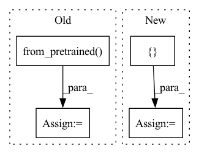

Pattern ID :24517
Before Change
class SAFEModel(BaseModel):
def __init__(self, vocab, plm):
super(SAFEModel, self).__init__()
self.plm = AutoModel.from_pretrained( plm,return_dict=True,output_hidden_states=True,output_attentions=True)
self.vocab = vocab
self.sent_dim = 1024
// self.fc = nn.Linear(in_features=self.sent_dim,out_features=1)
// self.fc.weight.data.normal_(mean=0.0,std=0.02)After Change
init_range=0.02, encoder_config=None):
super().__init__()
if encoder_config is None:
encoder_config = { "output_attentions": False}
self.args = args
encoder_config = {"output_attention": False}
self.encoder = TextEncoder(model_name, **encoder_config)In pattern: SUPERPATTERN
Frequency: 6
Non-data size: 4
Instances Fragment ID: 76237295
Project Name: cognlp/cogktr
Commit Name: f6b353c2e6ed535601aa335376fd16f7a2cc5004
Time: 2022-07-15
Author: 1208314139@qq.com
File Name: cogktr/models/safe_model.py
M Class Name: SAFEModel
N Class Name: SAFEModel
M Method Name: __init__(20)
N Method Name: __init__(3)
M Parent Class: nn.Module
N Parent Class: BaseModel
M File Name: cogktr/models/safe_model.py
N File Name: cogktr/models/safe_model.py
M Start Line: 379
M End Line: 414
N Start Line: 283
N End Line: 301
Before Change
// set model to evaluation mode
model.eval()
tokenizer = BertTokenizer.from_pretrained( config.bert_model, do_lower_case=True, skip_special_tokens=True)
id2label = config.id2label
true_tags = []
pred_tags = []
sent_data = []After Change
batch_output = batch_output.detach().cpu().numpy()
batch_tags = batch_tags.to("cpu").numpy()
for i, indices in enumerate(np.argmax(batch_output, axis=2)):
pred_tag = []
for j, idx in enumerate(indices):
if label_masks[i][j]:
pred_tag.append(id2label.get(idx))
pred_tags.append(pred_tag) Fragment ID: 76237294
Project Name: hemingkx/wordseg
Commit Name: 148a03a62ebd0fc3dcbd4828b32aabd8ee76dc97
Time: 2021-05-05
Author: hemingkx@gmail.com
File Name: BERT-Softmax/train.py
M Class Name: AnonimousClass
N Class Name: AnonimousClass
M Method Name: evaluate(3)
N Method Name: evaluate(3)
M Parent Class:
N Parent Class:
M File Name: BERT-Softmax/train.py
N File Name: BERT-Softmax/train.py
M Start Line: 81
M End Line: 117
N Start Line: 80
N End Line: 125
Before Change
def main():
config = load_config()
tokenizer = BertTokenizer.from_pretrained( TOKENIZER_DIR)
transformer = Transformer.load_from_checkpoint(TRANSFORMER_CKPT)
transformer.eval()
seoul2jeju = load_seoul2jeju()[:10]
seouls = [seoul for seoul, _ in seoul2jeju]After Change
transformer = Transformer.load_from_checkpoint(transformer_ckpt)
tokenizer = BertTokenizer.from_pretrained(tokenizer_dir)
transformer.eval()
jejus = [ config["jeju"] Fragment ID: 76237299
Project Name: eubinecto/dekorde
Commit Name: fd3b05ba0d98e727d7c58233ac0e8c0449890275
Time: 2021-12-06
Author: eubinecto
File Name: main_predict.py
M Class Name: AnonimousClass
N Class Name: AnonimousClass
M Method Name: main(0)
N Method Name: main(0)
M Parent Class:
N Parent Class:
M File Name: main_predict.py
N File Name: main_predict.py
M Start Line: 10
M End Line: 19
N Start Line: 11
N End Line: 27
Before Change
self.embedding.eval()
else:
self.embedding = nn.Embedding(vocab_size, 768).to(device)
self.tokenizer = AutoTokenizer.from_pretrained( bert_type)
// out MLP
self.out_drop = nn.Dropout(p=out_drop).to(device)
self.out_linear = nn.Linear(encoder_dim, vocab_size).to(device)After Change
if num_heads is None:
num_heads = [3, 6, 12, 24]
if depths is None:
depths = [ 2, 2, 6, 2 Fragment ID: 76237298
Project Name: kamino666/video-captioning-transformer
Commit Name: 8d6f9ff2e965ba00bd44e7d9dd808ccf01251eee
Time: 2021-09-25
Author: 516015417@qq.com
File Name: model.py
M Class Name: VideoCaptionSwinTransformer
N Class Name: VideoCaptionSwinTransformer
M Method Name: __init__(27)
N Method Name: __init__(29)
M Parent Class: nn.Module
N Parent Class: nn.Module
M File Name: model.py
N File Name: model.py
M Start Line: 744
M End Line: 780
N Start Line: 733
N End Line: 772
Before Change
register_new_traced_function(torch.einsum, torch)
def get_model(self, args) -> torch.nn.Module:
config = T5Config.from_pretrained( args.model_name_or_path)
config.output_attentions = False
config.output_hidden_states = False
setattr(config, "output_only", True)
setattr(config, "precomputed_masks", args.precompute_masks)After Change
config_cls = T5Config
tokenizer_class = T5Tokenizer
explicitly_set_dict = {
"output_attentions": False,
"output_hidden_states": False,
"output_only": True,
"precomputed_masks": args.precompute_masks,
}
model, config, tokenizer = pretrained_model_config_and_tokenizer(model_class=model_cls, config_class=config_cls,
tokenizer_class=tokenizer_class,
model_name_or_path=args.model_name_or_path, Fragment ID: 76237296
Project Name: saareliad/ftpipe
Commit Name: 8e1feb4f6c06a8d06c7dba686f4095ecbce6b7bc
Time: 2020-09-10
Author: saareliad@campus.technion.ac.il
File Name: partitioning_scripts/tasks/t5.py
M Class Name: T5Partitioner
N Class Name: T5Partitioner
M Method Name: get_model(2)
N Method Name: get_model(2)
M Parent Class: Partitioner
N Parent Class: Partitioner
M File Name: partitioning_scripts/tasks/t5.py
N File Name: partitioning_scripts/tasks/t5.py
M Start Line: 314
M End Line: 339
N Start Line: 327
N End Line: 346
Before Change
class TestTriggerTemplatizer(TestCase):
def test_bert(self):
template = "[T] [T] {arbitrary} [T] {fields} [P]"
tokenizer = AutoTokenizer.from_pretrained( "bert-base-cased")
utils.add_task_specific_tokens(tokenizer)
templatizer = utils.TriggerTemplatizer(
template,
tokenizer,After Change
model_inputs, label = templatizer(self.default_instance)
// Label should be mapped to its token id
expected_label = torch.tensor([ self.default_tokenizer.convert_tokens_to_ids([self.default_instance["label"]]) Fragment ID: 76237301
Project Name: ucinlp/autoprompt
Commit Name: 829537c47b14e9e5e01a894df6d6c4606b922c41
Time: 2020-05-26
Author: rloganiv@gmail.com
File Name: tests/test_utils.py
M Class Name: TestTriggerTemplatizer
N Class Name: TestTriggerTemplatizer
M Method Name: test_bert(1)
N Method Name: test_bert(1)
M Parent Class: TestCase
N Parent Class: TestCase
M File Name: tests/test_utils.py
N File Name: tests/test_utils.py
M Start Line: 12
M End Line: 53
N Start Line: 48
N End Line: 78